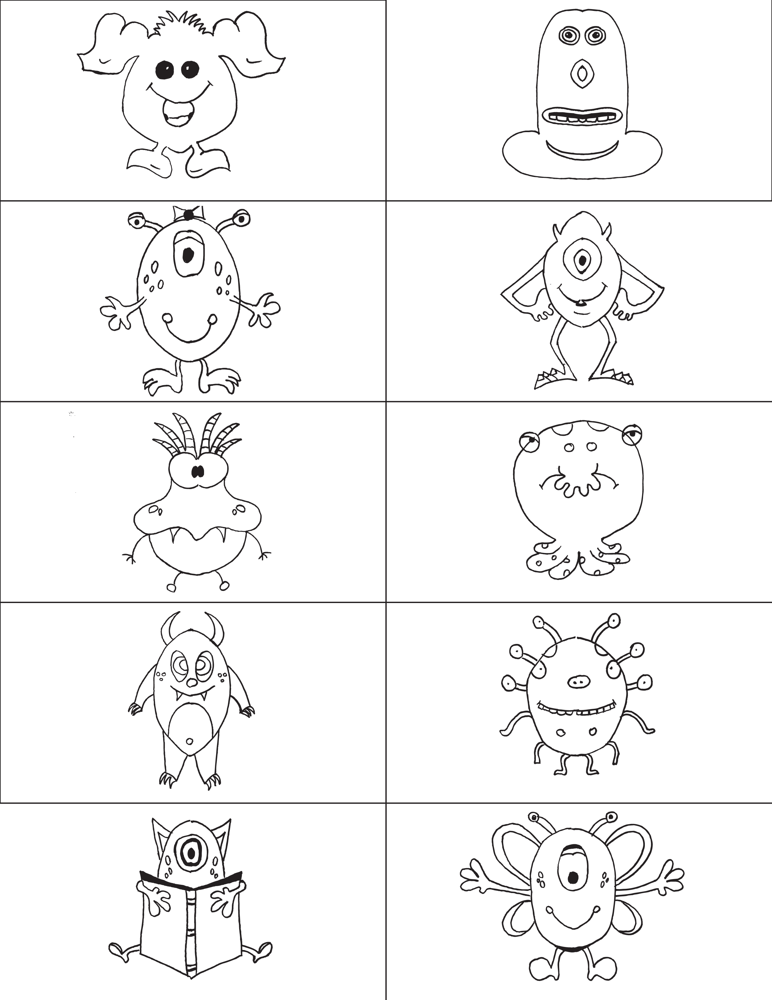

IDSE103: Game Facilitation
Group #3: Nicole + Maria
Monsters on the Left, Monsters on the Right
Players:
4+ in even numbers
Materials:
- Per player: 2 vertically symmetric monster images on pieces of paper about index card size. You can draw these yourself or print something online. We have ten images provided to get any group started.
- 1 marker per player
- 2 pieces of printer paper per player
- Tape (scotch or masking)
Instructions:
- Get into pairs
- Fold each piece of printer paper “hamburger” style
- Place all monster images face down, and then select one without letting your partner see it
- As a general rule of thumb, try not to look at what the other teams are drawing. It may spoil some of the surprise later!
There will be 4 rounds total, and you will alternate between being the leader and the follower in each round. Decide with your partner who is going to do which role first, and, with your dominant hand, complete Rounds 1 and 2 per the instructions below.
Leader instructions:
- Tape your image to your partner’s forehead without them seeing it
- Place one piece of printer paper between you and your partner
- Start drawing half of the image on your half of the paper, and your partner will try to follow in real-time
- Don’t give any verbal instructions to your partner!
Follower instructions:
- Without looking at the image on your forehead, try to draw exactly what your partner is drawing as they are drawing it.
After Round 2, turn your drawings face down and collect them off to the side. Then, turn your team’s two images face down and pass them clockwise two teams over (if it’s just 4 of you, then simply trade with the other players).
For Rounds 3 and 4, repeat the process, but with both teammates drawing with their non-dominant hands.
After all 4 rounds, put all drawings at the center and mix them all up. />
Can you figure out which two drawings are of the same image? />
